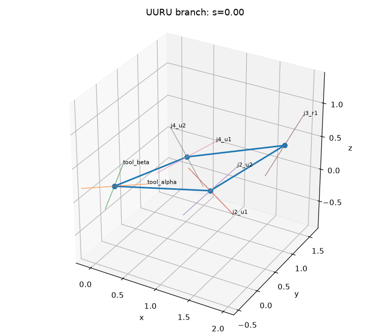
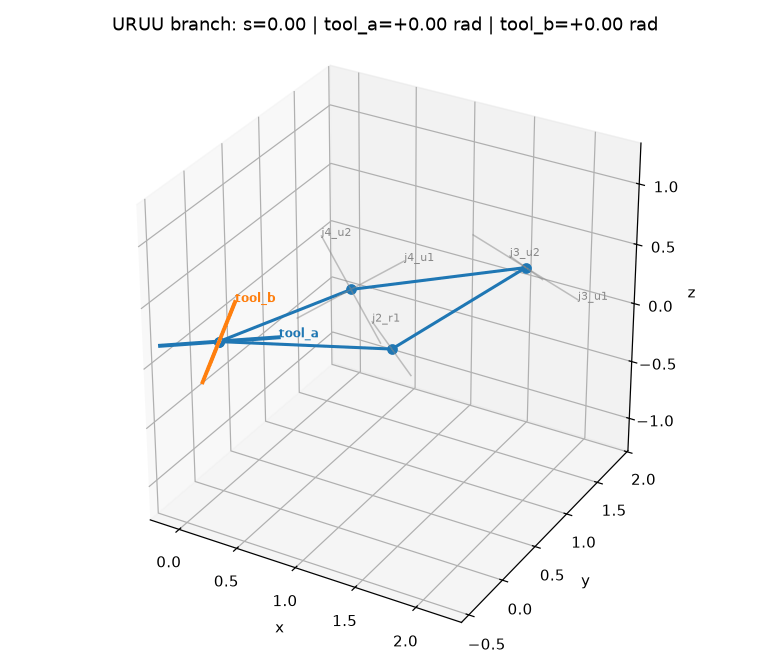
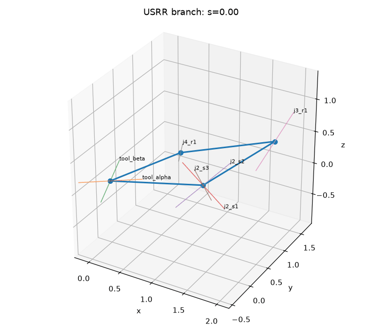
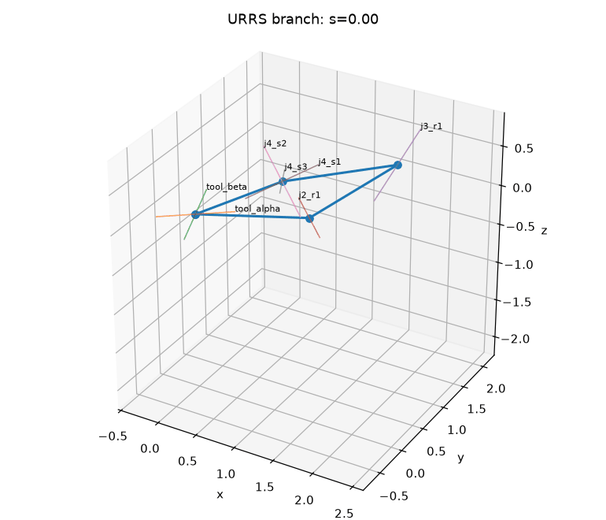
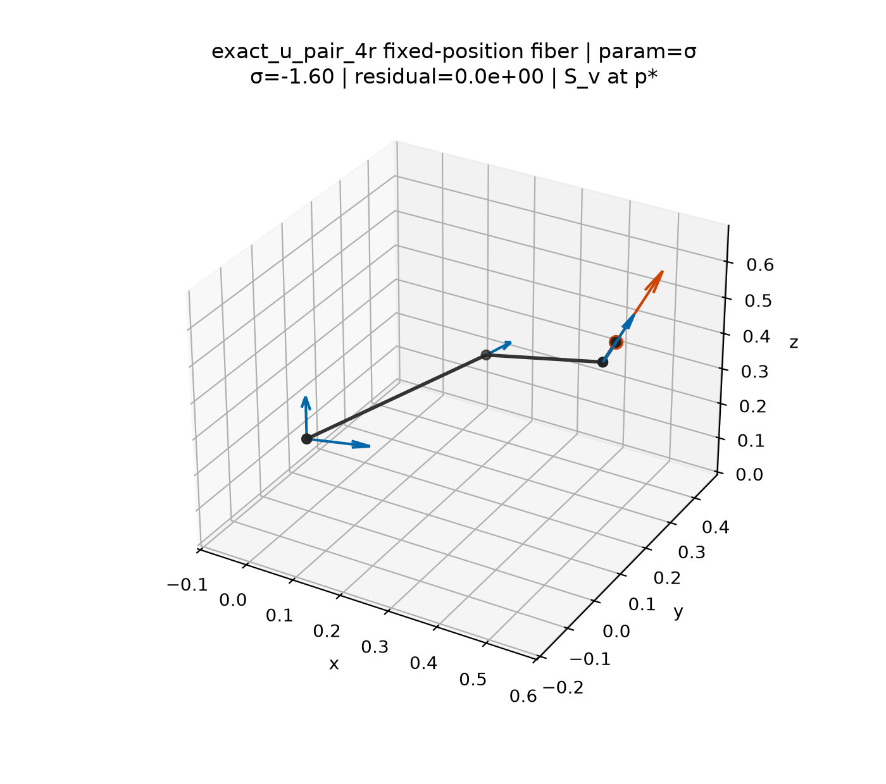
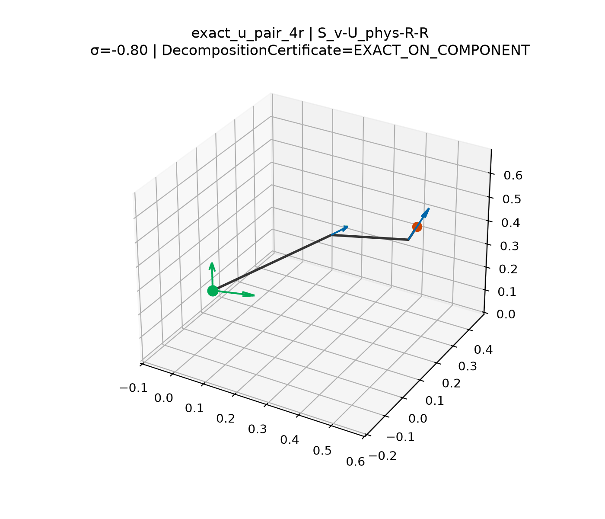

UUUR
UURU
URUU
USRR
URSR
URRSFix the tool position, form the exact virtual closed source mechanism, then ask whether architecture- or task-derived lower-dimensional mechanism families can certify behavior whose task images reconstruct the parent orientation or pointing image under an explicit stitching contract.
open chain → fixed-position fiber / parent → exact virtual closure → orientation or pointing image → certified decomposition (when valid) → mechanism behavior certificate → coverage / compatibility stitching → independent validation
Classical Grashof classification is one planar four-bar behavior descriptor. The program does not assume a universal spatial Grashof inequality.
mechanism_explorer_only): they are
not accepted source-derived children and are not workspace certificates.
Source-chain L4 motion (proximal exact_u_pair_4r) is shown separately
and remains LOCAL_ONLY on a traced arc.
Canonical V04 copies of the V03 branch animations. Parameter is continuation
arclength s (not a prescribed crank input). Highlighted axes are the
virtual tool chart coordinates tool_a / tool_b.
Full sprint readout:
V03/V04 closure continuation.
UUUR
UURU
URUU
USRRURSR
URRS
Fixed-position fiber continuation and independent source/reduced overlay for the
proximal exact_u_pair_4r architecture (V05B / V05D). Closed-mechanism
claim remains LOCAL_ONLY.

exact_u_pair_4r fiber (V05B)
exact_u_pair_4r source/reduced overlay (V05D)| Rung | Label | Strongest supported statement | Missing gate |
|---|---|---|---|
| L3 planar 3R | trusted_exact_reference |
Exact fixed-position four-bar reduction and designated-link rotatability recover planar dexterity | None for reference role |
| L4 spatial 4R | local_only |
One-DOF source / orientation-curve machinery exists; proximal exact-U traced-arc match is LOCAL_ONLY |
Global component-complete certificate |
| L5 spatial 5R | parent_incomplete |
Hardened source-parent infrastructure; R3A five-point kernels and H0–H6 evidence gates implemented; reconstruction not accepted; fixed-axis UUUR still rejected as an h=c equivalence | Accepted source-derived child reconstruction |
| L6 spatial 6R | scaffold_only |
Dimensional / task contracts and ladder stubs exist | Independent SO(3) reference; V07A held |
| L7 spatial 7R | deferred / BLOCKED |
Redundancy / gauge framing only | L6 completion |
Analytical reachable / dexterous workspace for planar 3R.
Exact four-bar assemblability, inversion, designated-link rotatability (Grashof kept separate).
CLI: grashof-workspace · atlas / experiment figures.
Fixed-position fiber continuation and orientation-curve machinery (V05B–C).
Axis aggregation with certificate split; near-aligned rejection (V05D–E).
Proximal exact_u_pair_4r: aggregation EXACT_GLOBAL, closed-mechanism LOCAL_ONLY on a traced arc.
Implicit-manifold engine validation (V06A0); local parent patch (V06A1); multi-chart atlas (V06A2).
Orientation + pointing images (V06C); task-derived h=c fibers (V06D1); compound SUUR audit (V06B).
Shared 1D pseudo-arclength continuation; atlas stitch / component provenance; reconstruction cell paint (V06E).
R3A five-point hub: l5_reconstruction/r3a/index.html — implemented kernels (oracle, direct IK, h=c control, UURU leaves). Full-mode hub regenerated as PARTIAL. Reconstruction is not accepted.
Not yet: general 5R factorization, complete parent, S² completeness theorem. Fixed-axis UUUR remains rejected as an h=c fiber equivalence.
Standalone spatial four-bar geometry, closure, winding, and HTML laboratory (V00–V05A).
Reusable infrastructure — not manipulator-workspace evidence without source provenance and reconstruction.
Shared L3–L7 records: parent → fiber → child → certificate → reconstruction payloads.
Readout: decomposition_ladder/index.html.
Contracts and stubs only. No frozen decomposition-free SO(3) reference.
V07A not authorized (ADR-047 / ADR-048).
Implemented L5 execution program, not an accepted reconstruction. Pointing coverage in S^2, not dexterity.
Natural children fix one virtual-spherical chart coordinate (SURU → UURU)
and continue frozen geometry. They are not required to remain on h=c.
R3A-H0–H6 gates exist; ci/smoke cannot issue full-campaign disposition.
R3B and L6 remain held.
PARTIAL; reconstruction not accepted)UUUR child: REJECTED (not accepted).EXACT_GLOBAL / EXACT_ON_COMPONENT.unresolved (empty accepted children ≠ no valid recombination).BUDGET_LIMITED; stitch topology unresolved / not conforming.current fixed-axis UUUR construction rejected; broader 5R factorization unresolved; V07A held pending parent/continuation completion.
| Capability slice | Status | Primary readout |
|---|---|---|
| V05B fixed-position fiber | MVP | v05b |
| V05C orientation curve | MVP | v05c |
| V05D axis aggregation | MVP (LOCAL_ONLY closed-mech on proximal exact-U) |
v05d |
| V05E near-aligned rejection | MVP | v05e |
| R3A L5 five-point natural leaves | implemented kernels; full-mode hub PARTIAL; reconstruction not accepted |
r3a |
| V06A0 manifold engine | software validation only | v06a0 |
| V06A1 local parent patch | LOCAL_PATCH |
v06a1 |
| V06A2 parent atlas | BUDGET_LIMITED |
v06a2 |
| V06C source images | partial coverage; not S² complete | v06c |
| V06B compound SUUR | LOCAL_ONLY / controls REJECTED | v06b |
| V06D1 level-set fibers | task-derived; not reconstruction | v06d1 |
| V06D2 virtual-U / UUUR | REJECTED |
v06d2 |
| V06E reconstruction paint | partial / no accepted children; factorization unresolved | v06e |
mechanism_explorer_only)
Forward gates live only in docs/ROADMAP.md (R1 behavior certificate → R2 L4 reference →
R3 L5 stitching MVP → R4–R5 L6 → R6 L7 → R7 atlases/rules after reconstruction).
Strongest next scientific candidate after the documentation reset: one controlled source parent → one legitimate parameterized child family → verified lifts → behavior records → stitching → independent parent comparison.
PYTHONPATH=src python -m grashof_workspace.project_dashboard --results-root results PYTHONPATH=src python -m grashof_workspace.decomposition_ladder --outdir results/decomposition_ladder --no-animation